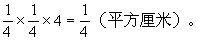

第三讲 巧求表面积
我们已经学习了长方体和正方体，知道长方体或正方体六个面面积的总和叫做长方体或正方体的表面积.如果长方体的长用a表示、宽用b表示、高用h表示，那么，长方体的表面积=（ab＋ah＋bh）×2.如果正方体的棱长用a表示，则正方体的表面积=6a2.对于由几个长方体或正方体组合而成的几何形体，或者是一个长方体或正方体组合而面的几何形体，它们的表面积又如何求呢？涉及立体图形的问题，往往可考查同学们的看图能力和空间想象能力.小学阶段遇到的立体图形主要是长方体和正方体，这些图形的特点都是可以从六个方向去看，特别是求表面积时，就是上下、左右和前后六个方向（有时只考虑上、左、前三个方向）的平面图形的面积的总和.有了这个原则，在解决类似问题时就十分方便了。
例1 在一个棱长为5分米的正方体上放一个棱长为4分米的小正方体（右图），求这个立体图形的表面积。
分析 我们把上面的小正方体想象成是可以向下“压缩”的，“压缩”后我们发现：小正方体的上面与大正方体上面中的阴影部分合在一起，正好是大正方体的上面.这样这个立体图形的表面积就可以分成这样两部分：
上下方向：大正方体的两个底面，
解：上下方向：5×5×2=50（平方分米）；
侧面：5×5×4＝100（平方分米），
4×4×4=64（平方分米）。
这个立体图形的表面积为：
50+100+64=214（平方分米）。
答：这个立体图形的表面积为214平方分米。
例2 下图是一个棱长为2厘米的正方体，在正方体上表面的正中，向下挖一个棱长为1厘米的正方体小洞，接着在小洞的底面正中向下挖一个棱
分析 这道题的难点是洞里的表面积不易求.在小洞里，平行于上下表面的所有面的面积和等于边长为1厘米的正方形的面积，这个边长为1厘米的正方形再与图中阴影部分的面积合在一起正好是边长为2厘米的正方体的上表面的面积.这个立体图形的表面积分成两部分：
上下方向：2个边长为2厘米的正方形的面积，
解：平行于上下表面的各面面积之和：
2×2×2＝8（平方厘米）；
侧面：2×2×4=16（平方厘米），
1×1×4＝4（平方厘米），

这个立体图形的表面积为：
例3 把19个棱长为1厘米的正方体重叠在一起，按右图中的方式拼成一个立体图形.求这个立体图形的表面积。
分析 从上下、左右、前后看时的平面图形分别由下面三图表示。
因此，这个立体图形的表面积为：
2个上面+2个左面+2个前面。
解：上面的面积为：9平方厘米，
左面的面积为：8平方厘米，
前面的面积为：10平方厘米。
因此，这个立体图形的表面积为：
（9＋8＋10）×2＝54（平方厘米）。
答：这个立体图形的表面积为54平方厘米。
例4 一个正方体形状的木块，棱长为1米，沿着水平方向将它锯成3片，每片又按任意尺寸锯成4条，每条又按任意尺寸锯成5小块，共得到大大小小的长方体60块，如下图.问这60块长方体表面积的和是多少平方米？
分析 原来的正方体有六个外表面，每个面的面积是1×1＝1（平方米），无论后来锯成多少块，这六个外表面的6平方米总是被计入后来的小木块的表面积的.再考虑每锯一刀，就会得到两个1平方米的表面，现在一共锯了：2+3+4＝9（刀），一共得到18平方米的表面.因此，总的表面积为：6＋（2+3＋4）×2＝24（平方米）。
解：每锯一刀，就会得到两个1平方米的表面，
1×2=2（平方米）
一共锯了：2+3＋4＝9（刀），
得到：2×9＝18（平方米）的表面。
因此，这大大小小的60块长方体的表面积的和为：
6＋18＝24（平方米）。
答：这60块长方体表面积的和为24平方米.
例5 有一些棱长是1厘米的正方体，共1993个，要拼成一个大长方体，问表面积最小是多少？
解：因为1993是一个质数，所以这1993个正方体只能摆成长1993厘米、宽1厘米、高1厘米的长方体，因此这个长方体的表面积为：
1993×1×4＋1×1×2＝7974（平方厘米）。
答：摆成的大长方体表面积最小是7974平方厘米。
例6 用12个长5厘米、宽4厘米、高3厘米的长方体码放成一个表面积最小的长方体.码放后得到的这个长方体的表面积是多少？
分析 用这12个长方体可以码放出许多种不同的长方体，当然得到的表面积就不会相同.我们可以把所有不同情况下的长方体的表面积都计算出来，再选出最小值，但这样做，会浪费很多时间，情况还不一定考虑得周全，因此，要考虑有没有巧妙的方法.先重申一下基本原理：
在体积固定的所有长方体中，只有各棱长相等的立方体，其各棱长之和为最小，其表面积也最小。
因为所给长方体的长、宽、高都已确定，而且已知是12个长方体，所以拼成的这个大长方体的体积就已固定（3×4×5×12＝720立方厘米）.因为这个大长方体的体积不是一个立方数，因而不可能使各棱长都相等，但我们可以使长方体的长、宽、高这三个数尽可能地接近，这样使其各棱长之和为最小，这个大长方体的表面积也最小。
解：一方面12=22×3，另一方面，长、宽、高应尽量接近，观察到720（立方厘米）＝8（厘米）×9（厘米）×10（厘米），并且有5×2=10（厘米），4×2=8（厘米），3×3＝9（厘米）.
拼成的大长方体的长、宽、高分别为10厘米、8厘米、9厘米，这时长方体的表面积为：
（10×9＋10×8＋9×8）×2=484（平方厘米）。
答：码放后得到的这个长方体的表面积为484平方厘米。